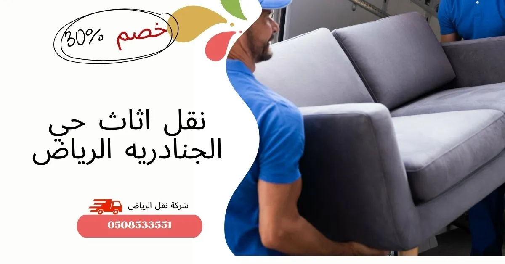

نقل اثاث حي الجنادريه الرياض

في عصرنا الحديث أصبح نقل الأثاث عملية تحتاج إلى تخطيط دقيق وخدمات موثوقة، وتتزايد الحاجة إلى شركات متخصصة في هذا المجال خاصة في المناطق الحيوية مثل حي الجنادريه بالرياض، وتقدم هذه الشركات حلولاً شاملة تتضمن التعبئة والنقل والتركيب مما يسهل على العملاء الانتقال بسهولة ويسر، وإن اختيار الشركة المناسبة يمكن أن يحدث فرقًا كبيرًا في تجربة النقل، حيث تتطلب عملية نقل اثاث حي الجنادريه الرياض خبرة وكفاءة لضمان سلامة الأثاث.
أفضل شركة نقل أثاث نقل اثاث حي الجنادريه الرياض
تعتبر شركة نقل الرياض الخيار الأمثل لمن يبحث عن خدمات نقل اثاث حي الجنادريه الرياض موثوقة ومحترفة في مدينة الرياض، وتميزت الشركة بجودة خدماتها واحترافيتها مما جعلها تتصدر قائمة أفضل شركات نقل الأثاث في السعودية، وإذا كنت تفكر في نقل أثاثك من أو إلى حي الجنادريه فإن شركة نقل الرياض تقدم لك كل ما تحتاجه لتجربة نقل سهلة ومريحة، وتتمتع الشركة بسمعة قوية في السوق، حيث تعتمد على أسلوب عمل مبتكر وفريق عمل متفاني، وتتميز الشركة أيضًا بعوامل مثل:
خبرة طويلة
تمتلك شركة نقل الرياض خبرة تمتد لسنوات في مجال نقل عفش بالرياض مما يجعلها قادرة على التعامل مع جميع أنواع الأثاث من القطع الحساسة إلى الأثاث الثقيل، وإن هذه الخبرة تساعدهم في تجنب المشكلات الشائعة التي قد تواجهها الشركات الأخرى.
فريق عمل محترف
تضم الشركة فريق عمل مدرب بشكل احترافي يتعامل مع الأثاث بعناية فائقة، مما يضمن وصوله إلى وجهته الجديدة دون أي ضرر، ويتلقى الفريق تدريبًا مستمرًا للحفاظ على معايير الجودة العالية.
خدمات شاملة
تقدم الشركة مجموعة متنوعة من الخدمات بما في ذلك التعبئة والتغليف والنقل والتركيب في الموقع الجديد، وهذا يجعلها الخيار الأنسب للأفراد والشركات على حد سواء.
تكنولوجيا متطورة
تستخدم الشركة أحدث التقنيات لضمان نقل الأثاث بكفاءة وسرعة مما يوفر الوقت والجهد للعملاء ويتضمن ذلك استخدام برامج لتتبع الشحنات والتأكد من وصولها في الوقت المحدد.
تقييمات إيجابية
حصلت الشركة على تقييمات عالية من العملاء السابقين مما يعكس جودة خدماتها ورضا العملاء، ويمكن للعملاء الاطلاع على آراء الآخرين للحصول على فكرة واضحة عن مستوى الخدمة.
التأمين على الأثاث
تقدم الشركة خيارات تأمين على الأثاث المنقول مما يوفر للعملاء راحة البال خلال عملية النقل، وهذا يضمن تعويض العملاء في حال حدوث أي ضرر.
نقل اثاث حي الجنادريه الرياض
عند التفكير في عملية نقل اثاث حي الجنادريه الرياض، يجب أن تختار شركة تتمتع بسمعة جيدة وتقدم خدمات موثوقة، وتقدم شركة نقل الرياض خدمات متكاملة لنقل الأثاث، مما يجعلها الخيار المثالي للسكان في هذا الحي، حيث أن معرفة تفاصيل الحي واحتياجات السكان تساعد الشركة في تقديم خدمات مخصصة، وذلك مثل:
تقييم شامل
تقوم الشركة بتقييم احتياجات النقل الخاصة بك قبل البدء في أي عملية مما يضمن تقديم الخدمة المناسبة لك، ويشمل ذلك تقدير حجم الأثاث وتحديد أفضل الطرق لنقله.
تغليف احترافي
يتم استخدام مواد تغليف عالية الجودة لحماية الأثاث أثناء النقل مما يقلل من خطر التلف، وتشمل هذه المواد الصناديق المخصصة والفقاعات الهوائية والأغلفة القابلة للتعديل.
أسطول حديث
تمتلك الشركة أسطولًا من السيارات الحديثة والمجهزة لنقل الأثاث بأمان. هذه السيارات مجهزة بوسائل الأمان اللازمة لضمان حماية الأثاث خلال الرحلة.
مرونة في المواعيد
تقدم الشركة خيارات مرنة لمواعيد النقل، مما يتناسب مع جدولك الزمني ويمكنك اختيار الوقت الذي يناسبك، سواء كان في عطلة نهاية الأسبوع أو خلال أيام الأسبوع.
خدمة عملاء متميزة
تتوفر خدمة العملاء على مدار الساعة للرد على استفساراتك ومساعدتك في كل ما تحتاجه، ويتواجد ممثلون مستعدون دائمًا لتقديم الدعم والمساعدة.
تحقيق رضا العملاء
تضع الشركة رضا العملاء في مقدمة أولوياتها، حيث تسعى جاهدة لتلبية احتياجاتهم وتوقعاتهم، ويتم إجراء استطلاعات دورية للحصول على ملاحظات العملاء لتحسين الخدمات.
تقديم المشورة
تقدم الشركة نصائح مجانية للعملاء حول كيفية التحضير لعملية النقل، مما يساعد في تسهيل العملية وتقليل القلق.
أرخص شركة نقل عفش بالرياض
إذا كنت تبحث عن أرخص شركة تقدم نقل اثاث حي الجنادريه الرياض، فإن شركة نقل الرياض تقدم أسعارًا تنافسية دون المساومة على الجودة، وتعتبر خدماتها مثالية للسكان في حي الجنادريه الذين يرغبون في نقل أثاثهم بأسعار معقولة، وتحتفظ الشركة بسمعة قوية في تقديم خدمات عالية الجودة بأسعار مناسبة، وذلك من خلال:
- تسعير شفاف: تقدم الشركة تسعيرًا شفافًا بدون رسوم خفية مما يضمن لك معرفة التكلفة النهائية قبل بدء الخدمة، ويتم توضيح جميع التكاليف المتعلقة بالنقل بشكل مفصل.
- عروض خاصة: تقدم الشركة عروضًا خاصة خلال فترات معينة مما يجعل خدماتها أكثر جذبًا، ويمكن أن تشمل هذه العروض خصومات على الخدمات أو حزم تشمل النقل والتغليف.
- توفير في التكاليف: من خلال خدمات التعبئة والتغليف والنقل المجمعة يمكنك توفير المزيد من التكاليف، كما أن حجز خدمات إضافية مع النقل يمكن أن يقلل من التكلفة الإجمالية.
- خدمات عالية الجودة: بالرغم من الأسعار المنخفضة تظل جودة الخدمة على أعلى مستوى، تتبع الشركة معايير صارمة لضمان رضا العملاء.
- تجربة عملاء مريحة: تركز الشركة على راحة العملاء وتلبية احتياجاتهم بأفضل شكل ممكن، ويتم توفير حلول مخصصة تناسب كل عميل بناءً على متطلباته الخاصة.
- عروض الباقات: تقدم الشركة باقات متنوعة تشمل مجموعة من الخدمات بأسعار مخفضة، مما يجعلها خيارًا اقتصاديًا للمستخدمين.
- تسهيلات الدفع: توفر الشركة خيارات متعددة للدفع بعد خدمات نقل اثاث حي الجنادريه الرياض مما يسهل على العملاء إجراء معاملاتهم المالية بسهولة ويسر.
خدمات شركة نقل الرياض
تقدم شركة نقل الرياض مجموعة شاملة من خدمات نقل اثاث حي الجنادريه الرياض لتلبية احتياجات جميع العملاء خاصةً لأولئك الذين يقيمون في حي الجنادريه، وتشمل هذه الخدمات كل ما يتعلق بنقل الأثاث والعديد من الخدمات المساندة مما يجعلها الخيار الأفضل في السوق، ومن بين هذه الخدمات:
- تعبئة وتغليف: توفر الشركة بجانب خدمات نقل اثاث حي الجنادريه الرياض خدمات تعبئة وتغليف احترافية، حيث يقوم فريق العمل بتغليف كل قطعة بأمان، ويتم استخدام مواد عالية الجودة لضمان حماية الأثاث من الصدمات أثناء النقل.
- النقل الآمن: يتم نقل الأثاث باستخدام سيارات مجهزة خصيصًا مما يضمن سلامة الأثاث خلال الرحلة، وتشمل هذه السيارات أنظمة أمان متطورة للحفاظ على الأثاث.
- التركيب في الموقع الجديد: بعد الوصول إلى الوجهة يقوم الفريق بتركيب الأثاث وفقًا لاحتياجات العميل، ويتمكن العملاء من تحديد كيفية ترتيب الأثاث مما يضمن تجربة مرضية.
- خدمة العملاء: تتوفر خدمة العملاء للإجابة على أي استفسارات أو تقديم المساعدة في أي وقت، ويعمل فريق الدعم على مدار الساعة لضمان رضا العملاء.
- حلول مخصصة: تقدم الشركة حلولاً مخصصة بناءً على احتياجات كل عميل مما يضمن تجربة نقل فريدة ومريحة، ويمكن للعملاء الاستفادة من مشورة الخبراء حول خيارات النقل المناسبة.
- خدمات التخزين: توفر الشركة خدمات تخزين آمنة للأثاث، مما يمكن العملاء من تخزين أغراضهم لفترات محددة بأمان تام.
- استشارات مجانية: تقدم الشركة استشارات مجانية للعملاء لمساعدتهم في اتخاذ القرار الصحيح بشأن نقل أثاثهم، مما يضمن تجربة سلسة ومريحة.
الاسئلة الشائعة حول نقل اثاث حي الجنادريه الرياض
كيف يمكنني الحصول على تقدير تكلفة النقل؟
يمكنك الاتصال بشركة نقل الأثاث للحصول على تقدير تكلفة النقل، وعادة ما يقوم الفريق بزيارة موقعك لتقييم حجم الأثاث واحتياجات النقل، ثم يقدم لك سعرًا شاملاً يشمل جميع الخدمات المطلوبة.
هل يمكنني اختيار موعد النقل الذي يناسبني؟
نعم تقدم شركة نقل الأثاث خيارات مرنة لمواعيد النقل، ويمكنك تحديد الوقت الذي يناسبك سواء في عطلة نهاية الأسبوع أو خلال أيام الأسبوع، لتسهيل العملية وفق جدولك الشخصي.
ما هي أنواع الأثاث التي يمكن نقلها؟
شركة نقل الأثاث تتعامل مع جميع أنواع الأثاث بما في ذلك الأثاث الثقيل مثل الأرائك والخزائن، وكذلك الأثاث الحساس مثل التحف والأجهزة الكهربائية، ويتم استخدام تقنيات خاصة لضمان سلامة جميع القطع أثناء النقل.
كيف يمكنني تأكيد الحجز لعملية النقل؟
لتأكيد الحجز يمكنك الاتصال بشركة نقل الأثاث وتقديم تفاصيل النقل المطلوبة مثل تاريخ النقل ونوع الأثاث، وستقوم الشركة بتأكيد الحجز وإعطائك جميع المعلومات اللازمة قبل يوم النقل.